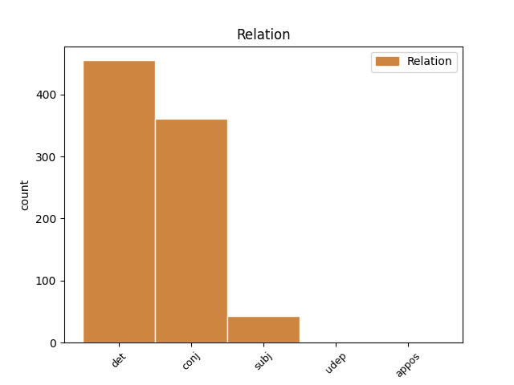
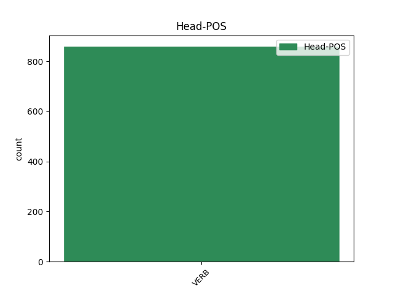
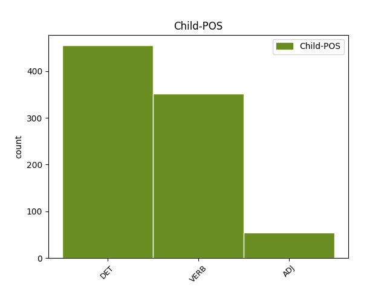

Distribution of features within this leaf



Agreement Rules sorted by frequency.
- When the dependent token is the determiner(det) of the head token, and the head token is VERB and the dependent token is DET.
1 τίς _ _ _ _ 0 _ _ _
2 δ̓ _ _ _ _ 0 _ _ _
3 ἂν _ _ _ _ 0 _ _ _
4 φίλους _ _ _ _ 0 _ _ _
5 ὠνοῖτο _ _ _ _ 0 _ _ _
6 τοὺς ὁ DET l-p---ma- Case=Acc|Gender=Masc|Number=Plur 7 det _ _
7 κεκτημένους κτέομαι VERB v-prpema- Aspect=Perf|Case=Acc|Gender=Masc|Number=Plur|Tense=Past|VerbForm=Part|Voice=Mid 0 _ _ _
8 ; _ _ _ _ 0 _ _ _
1 σὺ _ _ _ _ 0 _ _ _
2 καὶ _ _ _ _ 0 _ _ _
3 λέγων λέγω VERB v-sppamn- Case=Nom|Gender=Masc|Number=Sing|Tense=Pres|VerbForm=Part|Voice=Act 0 _ _ _
4 εὔφραινε _ _ _ _ 0 _ _ _
5 καὶ _ _ _ _ 0 _ _ _
6 πράσσων πράσσω VERB v-sppamn- Case=Nom|Gender=Masc|Number=Sing|Tense=Pres|VerbForm=Part|Voice=Act 3 conj _ _
7 φρένα _ _ _ _ 0 _ _ _
8 . _ _ _ _ 0 _ _ _
1 κείνου ἐκεῖνος ADJ a-s---mg- Case=Gen|Gender=Masc|Number=Sing 2 subj _ _
2 θέλοντος ἐθέλω VERB v-sppamg- Case=Gen|Gender=Masc|Number=Sing|Tense=Pres|VerbForm=Part|Voice=Act 0 _ _ _
3 εὖ _ _ _ _ 0 _ _ _
4 τελευτήσει _ _ _ _ 0 _ _ _
5 τάδε _ _ _ _ 0 _ _ _
6 . _ _ _ _ 0 _ _ _
1 οἱ _ _ _ _ 0 _ _ _
2 μὲν _ _ _ _ 0 _ _ _
3 πολῖται _ _ _ _ 0 _ _ _
4 διελάμβανον _ _ _ _ 0 _ _ _
5 αὐτὸν _ _ _ _ 0 _ _ _
6 καταλέξειν _ _ _ _ 0 _ _ _
7 εἰς _ _ _ _ 0 _ _ _
8 τὴν _ _ _ _ 0 _ _ _
9 στρατιὰν _ _ _ _ 0 _ _ _
10 τῶν _ _ _ _ 0 _ _ _
11 νέων _ _ _ _ 0 _ _ _
12 τοὺς _ _ _ _ 0 _ _ _
13 ἀκμάζοντας ἀκμάζω VERB v-pppama- Case=Acc|Gender=Masc|Number=Plur|Tense=Pres|VerbForm=Part|Voice=Act 0 _ _ _
14 ταῖς _ _ _ _ 0 _ _ _
15 ἡλικίαις _ _ _ _ 0 _ _ _
16 καὶ _ _ _ _ 0 _ _ _
17 τοῖς _ _ _ _ 0 _ _ _
18 σώμασιν _ _ _ _ 0 _ _ _
19 εὐρωστοτάτους εὔρωστος ADJ a-p---mas Case=Acc|Degree=Sup|Gender=Masc|Number=Plur 13 conj _ SpaceAfter=No
20 · _ _ _ _ 0 _ _ _
1 μετὰ _ _ _ _ 0 _ _ _
2 δὲ _ _ _ _ 0 _ _ _
3 ταῦτα _ _ _ _ 0 _ _ _
4 παρατάξεως _ _ _ _ 0 _ _ _
5 γενομένης _ _ _ _ 0 _ _ _
6 ἐπὶ _ _ _ _ 0 _ _ _
7 τῆς _ _ _ _ 0 _ _ _
8 χώρας _ _ _ _ 0 _ _ _
9 , _ _ _ _ 0 _ _ _
10 καὶ _ _ _ _ 0 _ _ _
11 τῶν _ _ _ _ 0 _ _ _
12 ἀγωνιζομένων ἀγωνίζομαι VERB v-pppemg- Case=Gen|Gender=Masc|Number=Plur|Tense=Pres|VerbForm=Part|Voice=Mid 16 subj _ _
13 παῤ _ _ _ _ 0 _ _ _
14 ἀμφοτέροις _ _ _ _ 0 _ _ _
15 ἐκθύμως _ _ _ _ 0 _ _ _
16 κινδυνευόντων κινδυνεύω VERB v-pppamg- Case=Gen|Gender=Masc|Number=Plur|Tense=Pres|VerbForm=Part|Voice=Act 0 _ _ _
17 , _ _ _ _ 0 _ _ _
18 πεσεῖν _ _ _ _ 0 _ _ _
19 συνέβη _ _ _ _ 0 _ _ _
20 οὐκ _ _ _ _ 0 _ _ _
21 ὀλίγους _ _ _ _ 0 _ _ _
22 παῤ _ _ _ _ 0 _ _ _
23 ἀμφοτέροις _ _ _ _ 0 _ _ _
24 , _ _ _ _ 0 _ _ _
25 νικῆσαι _ _ _ _ 0 _ _ _
26 δὲ _ _ _ _ 0 _ _ _
27 τοὺς _ _ _ _ 0 _ _ _
28 Συρακοσίους _ _ _ _ 0 _ _ _
29 . _ _ _ _ 0 _ _ _
1 νῦν _ _ _ _ 0 _ _ _
2 δ̓ _ _ _ _ 0 _ _ _
3 ὧδ̓ _ _ _ _ 0 _ _ _
4 ἄναρθρος _ _ _ _ 0 _ _ _
5 καὶ _ _ _ _ 0 _ _ _
6 κατερρακωμένος _ _ _ _ 0 _ _ _
7 τυφλῆς _ _ _ _ 0 _ _ _
8 ὑπ̓ _ _ _ _ 0 _ _ _
9 ἄτης _ _ _ _ 0 _ _ _
10 ἐκπεπόρθημαι _ _ _ _ 0 _ _ _
11 τάλας _ _ _ _ 0 _ _ _
12 , _ _ _ _ 0 _ _ _
13 ὁ _ _ _ _ 0 _ _ _
14 τῆς _ _ _ _ 0 _ _ _
15 ἀρίστης _ _ _ _ 0 _ _ _
16 μητρὸς _ _ _ _ 0 _ _ _
17 ὠνομασμένος ὀνομάζω VERB v-srpemn- Aspect=Perf|Case=Nom|Gender=Masc|Number=Sing|Tense=Past|VerbForm=Part|Voice=Mid 0 _ _ _
18 , _ _ _ _ 0 _ _ _
19 ὁ _ _ _ _ 0 _ _ _
20 τοῦ _ _ _ _ 0 _ _ _
21 κατ̓ _ _ _ _ 0 _ _ _
22 ἄστρα _ _ _ _ 0 _ _ _
23 Ζηνὸς _ _ _ _ 0 _ _ _
24 αὐδηθεὶς αὐδάω VERB v-sappmn- Case=Nom|Gender=Masc|Number=Sing|Tense=Past|VerbForm=Part|Voice=Pass 17 appos _ _
25 γόνος _ _ _ _ 0 _ _ _
26 . _ _ _ _ 0 _ _ _
Disagree Examples:
1 διαβόητα _ _ _ _ 0 _ _ _
2 δ̓ _ _ _ _ 0 _ _ _
3 ἐστὶν _ _ _ _ 0 _ _ _
4 καὶ _ _ _ _ 0 _ _ _
5 τὰ ὁ DET l-p---na- Case=Acc|Gender=Neut|Number=Plur 10 det _ _
6 ἐπὶ _ _ _ _ 0 _ _ _
7 Κρατίνῳ _ _ _ _ 0 _ _ _
8 τῷ _ _ _ _ 0 _ _ _
9 Ἀθηναίῳ _ _ _ _ 0 _ _ _
10 γενόμενα γίγνομαι VERB v-papmnn- Case=Nom|Gender=Neut|Number=Plur|Tense=Past|VerbForm=Part|Voice=Mid 0 _ _ _
11 · _ _ _ _ 0 _ _ _
1 καὶ _ _ _ _ 0 _ _ _
2 μετὰ _ _ _ _ 0 _ _ _
3 ταῦτα _ _ _ _ 0 _ _ _
4 ναυαγίᾳ _ _ _ _ 0 _ _ _
5 χρησάμενος χράω VERB v-sapmmn- Case=Nom|Gender=Masc|Number=Sing|Tense=Past|VerbForm=Part|Voice=Mid 0 _ _ _
6 περὶ _ _ _ _ 0 _ _ _
7 Μύκονον _ _ _ _ 0 _ _ _
8 καὶ _ _ _ _ 0 _ _ _
9 πάντων _ _ _ _ 0 _ _ _
10 ἀπολομένων ἀπόλλυμι VERB v-papmmg- Case=Gen|Gender=Masc|Number=Plur|Tense=Past|VerbForm=Part|Voice=Mid 5 conj _ _
11 μόνος _ _ _ _ 0 _ _ _
12 ὑπὸ _ _ _ _ 0 _ _ _
13 δελφῖνος _ _ _ _ 0 _ _ _
14 ἐσώθη _ _ _ _ 0 _ _ _
15 ὁ _ _ _ _ 0 _ _ _
16 Κοίρανος _ _ _ _ 0 _ _ _
17 . _ _ _ _ 0 _ _ _
1 ἄνασσα _ _ _ _ 0 _ _ _
2 , _ _ _ _ 0 _ _ _
3 νῦν _ _ _ _ 0 _ _ _
4 σοι _ _ _ _ 0 _ _ _
5 τέρψις _ _ _ _ 0 _ _ _
6 ἐμφανὴς _ _ _ _ 0 _ _ _
7 κυρεῖ _ _ _ _ 0 _ _ _
8 , _ _ _ _ 0 _ _ _
9 τῶν _ _ _ _ 0 _ _ _
10 μὲν _ _ _ _ 0 _ _ _
11 παρόντων πάρειμι VERB v-pppang- Case=Gen|Gender=Neut|Number=Plur|Tense=Pres|VerbForm=Part|Voice=Act 0 _ _ _
12 , _ _ _ _ 0 _ _ _
13 τὰ _ _ _ _ 0 _ _ _
14 δὲ _ _ _ _ 0 _ _ _
15 πεπυσμένῃ πυνθάνομαι VERB v-srpefd- Aspect=Perf|Case=Dat|Gender=Fem|Number=Sing|Tense=Past|VerbForm=Part|Voice=Mid 11 conj _ _
16 λόγῳ _ _ _ _ 0 _ _ _
17 . _ _ _ _ 0 _ _ _
1 νῦν _ _ _ _ 0 _ _ _
2 δέ _ _ _ _ 0 _ _ _
3 Πολύνεικες _ _ _ _ 0 _ _ _
4 , _ _ _ _ 0 _ _ _
5 τὸ ὁ DET l-s---na- Case=Acc|Gender=Neut|Number=Sing 8 det _ _
6 σὸν _ _ _ _ 0 _ _ _
7 δέμας _ _ _ _ 0 _ _ _
8 περιστέλλουσα περιστέλλω VERB v-sppafn- Case=Nom|Gender=Fem|Number=Sing|Tense=Pres|VerbForm=Part|Voice=Act 0 _ _ _
9 τοιάδ̓ _ _ _ _ 0 _ _ _
10 ἄρνυμαι _ _ _ _ 0 _ _ _
11 . _ _ _ _ 0 _ _ _
1 καὶ _ _ _ _ 0 _ _ _
2 τῶνδ̓ _ _ _ _ 0 _ _ _
3 ἔλεγχον _ _ _ _ 0 _ _ _
4 τοῦτο _ _ _ _ 0 _ _ _
5 μὲν _ _ _ _ 0 _ _ _
6 Πυθώδ̓ _ _ _ _ 0 _ _ _
7 ἰὼν _ _ _ _ 0 _ _ _
8 πεύθου _ _ _ _ 0 _ _ _
9 τὰ ὁ DET l-p---nn- Case=Nom|Gender=Neut|Number=Plur 10 det _ _
10 χρησθέντ̓ χράω VERB v-pappna- Case=Acc|Gender=Neut|Number=Plur|Tense=Past|VerbForm=Part|Voice=Pass 0 _ _ _
11 εἰ _ _ _ _ 0 _ _ _
12 σαφῶς _ _ _ _ 0 _ _ _
13 ἤγγειλά _ _ _ _ 0 _ _ _
14 σοι _ _ _ _ 0 _ _ _
15 · _ _ _ _ 0 _ _ _